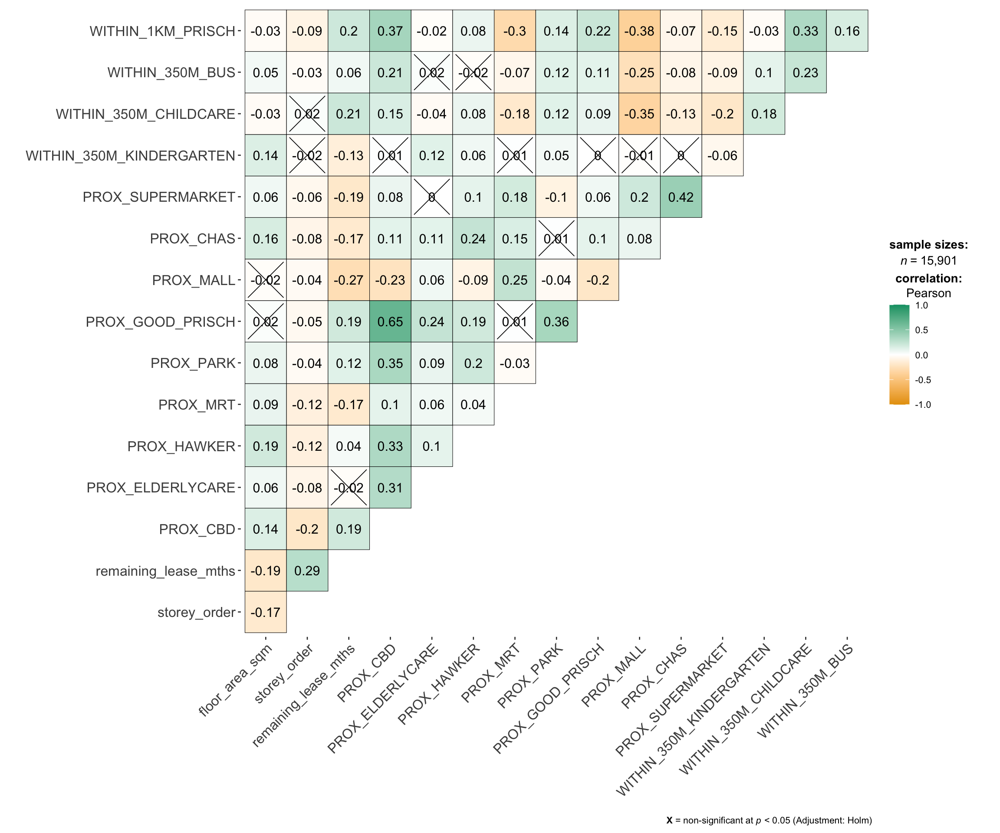
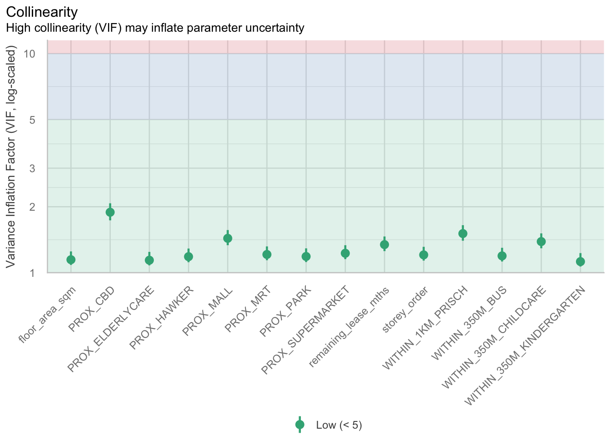

# Create/load all required packages in one shot
pacman::p_load(httr,tidyverse, sf, tmap,jsonlite, progress, spdep,GWmodel, SpatialML, rsample, Metrics, knitr, kableExtra, spatialRF, randomForestExplainer)In-class Ex08: Take-home Exercise 3 Kick Starter
1 Installing and Loading R Packages
2 Geocoding for Geometric
2.1 Importing data
# Downloading the raw data from data.gov.sg.
# Data source: Resale flat prices based on registration date from Jan-2017 onwards
# load full table once
HDBresale_raw <- read_csv("/Users/cktan/Desktop/SMU/01_Geospatial Analytics (ISSS626)/Hands-on_Ex/In-Class_Ex08/data/rawdata/ResaleflatpricesbasedonregistrationdatefromJan2017onwards.csv")Rows: 218083 Columns: 11
── Column specification ────────────────────────────────────────────────────────
Delimiter: ","
chr (8): month, town, flat_type, block, street_name, storey_range, flat_mode...
dbl (3): floor_area_sqm, lease_commence_date, resale_price
ℹ Use `spec()` to retrieve the full column specification for this data.
ℹ Specify the column types or set `show_col_types = FALSE` to quiet this message.# Inspect the loading data
glimpse(HDBresale_raw)Rows: 218,083
Columns: 11
$ month <chr> "2017-01", "2017-01", "2017-01", "2017-01", "2017-…
$ town <chr> "ANG MO KIO", "ANG MO KIO", "ANG MO KIO", "ANG MO …
$ flat_type <chr> "2 ROOM", "3 ROOM", "3 ROOM", "3 ROOM", "3 ROOM", …
$ block <chr> "406", "108", "602", "465", "601", "150", "447", "…
$ street_name <chr> "ANG MO KIO AVE 10", "ANG MO KIO AVE 4", "ANG MO K…
$ storey_range <chr> "10 TO 12", "01 TO 03", "01 TO 03", "04 TO 06", "0…
$ floor_area_sqm <dbl> 44, 67, 67, 68, 67, 68, 68, 67, 68, 67, 68, 67, 67…
$ flat_model <chr> "Improved", "New Generation", "New Generation", "N…
$ lease_commence_date <dbl> 1979, 1978, 1980, 1980, 1980, 1981, 1979, 1976, 19…
$ remaining_lease <chr> "61 years 04 months", "60 years 07 months", "62 ye…
$ resale_price <dbl> 232000, 250000, 262000, 265000, 265000, 275000, 28…2.2 Reducing and filtering the dataset
# find the most recent month that has 4 ROOM
month_choice <- HDBresale_raw %>%
filter(flat_type == "4 ROOM") %>%
count(month, name = "n") %>%
filter(n > 0) %>%
arrange(desc(month)) %>%
slice(1) %>%
pull(month)
#Inspect the output
month_choice[1] "2025-10"# filter to that month
HDBresale <- HDBresale_raw %>%
filter(flat_type == "4 ROOM", month == month_choice)
nrow(HDBresale) # should be greater than zero[1] 4582.3 Geodata pre-processing and cleaning
2.3.1 Address normalisation matters
# street name fix
HDBresale$street_name <- gsub("ST\\.", "SAINT", HDBresale$street_name)
Note
The gsub() function performs a global substitution (find and replace) in text.
2.3.2 Function to convert address to coordinates (LATITUDE and LONGITUDEY)
Below is the code chunk used to build a function that will convert address to coordinates
- The function sends a live API request to OneMap Singapore to obtain geographic coordinates (latitude and longitude) for each given HDB address.
- Explicit UTF-8 encoding is included to eliminate the “No encoding supplied” warning and ensure correct text handling for special characters.
- Always returns a tibble with columns LATITUDE and LONGITUDE, even when no match is found, to prevent pipeline breaks during unnesting.
- Only retrieves the first match from the API (pageNum = “1”), which increases speed but may ignore alternative results for ambiguous addresses.
- Requires street name standardisation (e.g., “ST.” changed to “SAINT”) before calling the function to improve matching accuracy.
- Coordinates returned by OneMap are based on WGS84 (EPSG 4326), so conversion to SVY21 (EPSG 3414) is needed for metric-based distance analysis.
- Each function call makes a separate HTTP request; for large datasets, use progress tracking, pauses (Sys.sleep), and checkpoint saving to avoid rate limits.
- Wrapping the function with tryCatch or purrr::safely prevents process interruption if a request fails or the API returns an unexpected response.
- A test call such as geocode(“101”,“JURONG EAST STREET 13”) is recommended before batch processing to confirm valid numeric coordinates are returned.
- For reproducibility and efficiency, store results (block, street, LATITUDE, LONGITUDE) in a CSV file to reuse in future runs without re-querying the API.
# professor geocode
# Reference: https://www.onemap.gov.sg/apidocs/coordinate
geocode <- function(block, streetname) { # define a function that takes block and street name and returns coordinates
base_url <- "https://onemap.gov.sg/api/common/elastic/search" # store the OneMap search endpoint as a constant for reuse
address <- paste(block, streetname, sep = " ") # build a single query string such as 118 ANG MO KIO AVENUE 4
query <- list( # create a named list of query parameters for the HTTP request
searchVal = address, # the address string to search
returnGeom = "Y", # ask the service to return geometry fields
getAddrDetails= "N", # do not request extra address fields to keep reply small
pageNum = "1" # take the first page only for a single best match
) # end of query parameter list
res <- httr::GET(base_url, query = query) # send a GET request to OneMap with the query parameters
restext <- httr::content(res, as = "text", encoding = "UTF-8") # read the response body as text with UTF8 to avoid encoding warnings
out <- jsonlite::fromJSON(restext) # parse the JSON text into an R list or data frame
if (length(out$results) == 0) { # if the service returns no match for this address
tibble(LATITUDE = NA_real_, LONGITUDE = NA_real_) # return a tibble with missing numeric coordinates
} else { # otherwise when there is at least one match
tibble(
LATITUDE = as.numeric(out$results$LATITUDE[1]), # take the first result latitude and coerce to numeric
LONGITUDE = as.numeric(out$results$LONGITUDE[1]) # take the first result longitude and coerce to numeric
) # end tibble creation
} # end branch
} # end function2.3.3 Perform minimal unit/smoke test
# Test with a single known HDB address
geocode("101", "JURONG EAST STREET 13")# A tibble: 1 × 2
LATITUDE LONGITUDE
<dbl> <dbl>
1 1.34 104.2.4 Merge the LATITUDE and LONGITUDE to dataset
# create LATITUDE and LONGITUDE and merge into the table
HDBresale <- HDBresale %>%
mutate(geo = purrr::map2(block, street_name, geocode)) %>%
tidyr::unnest(geo)
###
glimpse(HDBresale) # now includes LATITUDE and LONGITUDERows: 458
Columns: 13
$ month <chr> "2025-10", "2025-10", "2025-10", "2025-10", "2025-…
$ town <chr> "ANG MO KIO", "ANG MO KIO", "ANG MO KIO", "ANG MO …
$ flat_type <chr> "4 ROOM", "4 ROOM", "4 ROOM", "4 ROOM", "4 ROOM", …
$ block <chr> "336", "415", "438", "301", "302", "327", "212", "…
$ street_name <chr> "ANG MO KIO AVE 1", "ANG MO KIO AVE 10", "ANG MO K…
$ storey_range <chr> "07 TO 09", "07 TO 09", "01 TO 03", "10 TO 12", "1…
$ floor_area_sqm <dbl> 91, 92, 92, 98, 98, 98, 81, 92, 99, 91, 99, 91, 90…
$ flat_model <chr> "New Generation", "New Generation", "New Generatio…
$ lease_commence_date <dbl> 1982, 1979, 1979, 1978, 1978, 1977, 1977, 1978, 19…
$ remaining_lease <chr> "55 years 04 months", "52 years 11 months", "52 ye…
$ resale_price <dbl> 570000, 562000, 465000, 638000, 580000, 600000, 54…
$ LATITUDE <dbl> 1.363594, 1.364453, 1.366971, 1.367421, 1.367090, …
$ LONGITUDE <dbl> 103.8518, 103.8537, 103.8539, 103.8459, 103.8457, …2.5 Convert to sf object
# Convert to sf object
HDBresale_sf <- HDBresale %>%
st_as_sf(coords = c("LONGITUDE", "LATITUDE"), crs = 4326) %>%
st_transform(crs = 3414)
# Inspect and verify the
glimpse(HDBresale_sf)Rows: 458
Columns: 12
$ month <chr> "2025-10", "2025-10", "2025-10", "2025-10", "2025-…
$ town <chr> "ANG MO KIO", "ANG MO KIO", "ANG MO KIO", "ANG MO …
$ flat_type <chr> "4 ROOM", "4 ROOM", "4 ROOM", "4 ROOM", "4 ROOM", …
$ block <chr> "336", "415", "438", "301", "302", "327", "212", "…
$ street_name <chr> "ANG MO KIO AVE 1", "ANG MO KIO AVE 10", "ANG MO K…
$ storey_range <chr> "07 TO 09", "07 TO 09", "01 TO 03", "10 TO 12", "1…
$ floor_area_sqm <dbl> 91, 92, 92, 98, 98, 98, 81, 92, 99, 91, 99, 91, 90…
$ flat_model <chr> "New Generation", "New Generation", "New Generatio…
$ lease_commence_date <dbl> 1982, 1979, 1979, 1978, 1978, 1977, 1977, 1978, 19…
$ remaining_lease <chr> "55 years 04 months", "52 years 11 months", "52 ye…
$ resale_price <dbl> 570000, 562000, 465000, 638000, 580000, 600000, 54…
$ geometry <POINT [m]> POINT (30055.03 38404.8), POINT (30263.23 38…# Check the CRS (Coordinate Reference System)
st_crs(HDBresale_sf)Coordinate Reference System:
User input: EPSG:3414
wkt:
PROJCRS["SVY21 / Singapore TM",
BASEGEOGCRS["SVY21",
DATUM["SVY21",
ELLIPSOID["WGS 84",6378137,298.257223563,
LENGTHUNIT["metre",1]]],
PRIMEM["Greenwich",0,
ANGLEUNIT["degree",0.0174532925199433]],
ID["EPSG",4757]],
CONVERSION["Singapore Transverse Mercator",
METHOD["Transverse Mercator",
ID["EPSG",9807]],
PARAMETER["Latitude of natural origin",1.36666666666667,
ANGLEUNIT["degree",0.0174532925199433],
ID["EPSG",8801]],
PARAMETER["Longitude of natural origin",103.833333333333,
ANGLEUNIT["degree",0.0174532925199433],
ID["EPSG",8802]],
PARAMETER["Scale factor at natural origin",1,
SCALEUNIT["unity",1],
ID["EPSG",8805]],
PARAMETER["False easting",28001.642,
LENGTHUNIT["metre",1],
ID["EPSG",8806]],
PARAMETER["False northing",38744.572,
LENGTHUNIT["metre",1],
ID["EPSG",8807]]],
CS[Cartesian,2],
AXIS["northing (N)",north,
ORDER[1],
LENGTHUNIT["metre",1]],
AXIS["easting (E)",east,
ORDER[2],
LENGTHUNIT["metre",1]],
USAGE[
SCOPE["Cadastre, engineering survey, topographic mapping."],
AREA["Singapore - onshore and offshore."],
BBOX[1.13,103.59,1.47,104.07]],
ID["EPSG",3414]]3 Supplement to Hands-on Exercise 8
3.1 Data import
# Read the prepared modelling dataset (sf object)
mdata <- readr::read_rds("/Users/cktan/Desktop/SMU/01_Geospatial Analytics (ISSS626)/Hands-on_Ex/Hands-on_Ex08/data/rawdata/mdata.rds")3.2 Data sampling
Calibrating predictive models are computational intensive, especially random forest method is used. For quick prototyping, a 10% sample will be selected at random from the data by using the code chunk below.
set.seed(1234)
HDB_sample <- mdata %>%
sample_n(1500)3.3 Checking of overlapping point
Warning
When using GWmodel to calibrate explanatory or predictive models, it is very important to ensure that there are no overlapping point features
The code chunk below is used to check if there are overlapping point features.
overlapping_points <- HDB_sample %>%
mutate(overlap = lengths(st_equals(., .)) > 1)3.4 Spatial jittler
In the code code chunk below, st_jitter() of sf package is used to move the point features by 5 meters to avoid overlapping point features.
HDB_sample <- HDB_sample %>%
st_jitter(amount = 5)3.5 Data Sampling
The entire data are split into training and test data sets with 65% and 35% respectively by using initial_split() of rsample package. rsample is one of the package of tigymodels.
set.seed(1234)
resale_split <- initial_split(HDB_sample,
prop = 6.67/10,)
train_data <- training(resale_split)
test_data <- testing(resale_split)3.6 Multicollinearity check
In order to avoid multicollineariy. In the code chunk below, ggcorrmat() of ggstatsplot is used to plot a correlation matrix to check if there are pairs of highly correlated independent variables.
mdata_nogeo <- mdata %>%
st_drop_geometry()
ggstatsplot::ggcorrmat(mdata_nogeo[, 2:17])
3.7 Building a non-spatial multiple linear regression
price_mlr <- lm(resale_price ~ floor_area_sqm +
storey_order + remaining_lease_mths +
PROX_CBD + PROX_ELDERLYCARE + PROX_HAWKER +
PROX_MRT + PROX_PARK + PROX_MALL +
PROX_SUPERMARKET + WITHIN_350M_KINDERGARTEN +
WITHIN_350M_CHILDCARE + WITHIN_350M_BUS +
WITHIN_1KM_PRISCH,
data=train_data)
olsrr::ols_regress(price_mlr) Model Summary
--------------------------------------------------------------------------
R 0.862 RMSE 60813.316
R-Squared 0.742 MSE 3698259426.779
Adj. R-Squared 0.739 Coef. Var 14.255
Pred R-Squared 0.734 AIC 24901.005
MAE 45987.256 SBC 24979.529
--------------------------------------------------------------------------
RMSE: Root Mean Square Error
MSE: Mean Square Error
MAE: Mean Absolute Error
AIC: Akaike Information Criteria
SBC: Schwarz Bayesian Criteria
ANOVA
-------------------------------------------------------------------------------
Sum of
Squares DF Mean Square F Sig.
-------------------------------------------------------------------------------
Regression 1.065708e+13 14 761220078101.236 202.745 0.0000
Residual 3.698259e+12 985 3754578098.252
Total 1.435534e+13 999
-------------------------------------------------------------------------------
Parameter Estimates
------------------------------------------------------------------------------------------------------------------
model Beta Std. Error Std. Beta t Sig lower upper
------------------------------------------------------------------------------------------------------------------
(Intercept) 115703.696 34303.409 3.373 0.001 48387.533 183019.860
floor_area_sqm 2778.618 292.262 0.165 9.507 0.000 2205.089 3352.146
storey_order 12698.165 1070.950 0.211 11.857 0.000 10596.559 14799.771
remaining_lease_mths 350.252 14.596 0.450 23.997 0.000 321.610 378.894
PROX_CBD -16225.588 630.092 -0.572 -25.751 0.000 -17462.065 -14989.110
PROX_ELDERLYCARE -11330.930 3220.845 -0.061 -3.518 0.000 -17651.436 -5010.423
PROX_HAWKER -19964.070 4021.046 -0.087 -4.965 0.000 -27854.872 -12073.268
PROX_MRT -39652.516 5412.288 -0.130 -7.326 0.000 -50273.456 -29031.577
PROX_PARK -15878.322 4609.199 -0.061 -3.445 0.001 -24923.300 -6833.344
PROX_MALL -15910.922 6438.111 -0.048 -2.471 0.014 -28544.911 -3276.933
PROX_SUPERMARKET -18928.514 13304.965 -0.025 -1.423 0.155 -45037.848 7180.821
WITHIN_350M_KINDERGARTEN 9309.735 2024.293 0.079 4.599 0.000 5337.313 13282.157
WITHIN_350M_CHILDCARE -1619.514 1180.948 -0.026 -1.371 0.171 -3936.977 697.948
WITHIN_350M_BUS -447.695 738.715 -0.011 -0.606 0.545 -1897.331 1001.940
WITHIN_1KM_PRISCH -10698.012 1543.511 -0.138 -6.931 0.000 -13726.960 -7669.065
------------------------------------------------------------------------------------------------------------------3.8 Multicollinearity check with VIF
vif <- performance::check_collinearity(price_mlr)
kable(vif,
caption = "Variance Inflation Factor (VIF) Results") %>%
kable_styling(font_size = 18) | Term | VIF | VIF_CI_low | VIF_CI_high | SE_factor | Tolerance | Tolerance_CI_low | Tolerance_CI_high |
|---|---|---|---|---|---|---|---|
| floor_area_sqm | 1.146686 | 1.085743 | 1.250945 | 1.070834 | 0.8720785 | 0.7993954 | 0.9210287 |
| storey_order | 1.206020 | 1.135720 | 1.312734 | 1.098189 | 0.8291736 | 0.7617690 | 0.8804986 |
| remaining_lease_mths | 1.343645 | 1.254833 | 1.463410 | 1.159157 | 0.7442440 | 0.6833358 | 0.7969186 |
| PROX_CBD | 1.887898 | 1.733977 | 2.074096 | 1.374008 | 0.5296898 | 0.4821378 | 0.5767088 |
| PROX_ELDERLYCARE | 1.140418 | 1.080572 | 1.244716 | 1.067904 | 0.8768712 | 0.8033960 | 0.9254357 |
| PROX_HAWKER | 1.183865 | 1.116887 | 1.289223 | 1.088056 | 0.8446907 | 0.7756609 | 0.8953457 |
| PROX_MRT | 1.211390 | 1.140307 | 1.318485 | 1.100632 | 0.8254980 | 0.7584464 | 0.8769566 |
| PROX_PARK | 1.186122 | 1.118797 | 1.291599 | 1.089092 | 0.8430839 | 0.7742340 | 0.8938169 |
| PROX_MALL | 1.435504 | 1.335252 | 1.565736 | 1.198125 | 0.6966193 | 0.6386771 | 0.7489224 |
| PROX_SUPERMARKET | 1.226727 | 1.153448 | 1.335000 | 1.107577 | 0.8151773 | 0.7490638 | 0.8669656 |
| WITHIN_350M_KINDERGARTEN | 1.123989 | 1.067172 | 1.228865 | 1.060183 | 0.8896886 | 0.8137594 | 0.9370564 |
| WITHIN_350M_CHILDCARE | 1.387119 | 1.292841 | 1.511748 | 1.177760 | 0.7209189 | 0.6614860 | 0.7734902 |
| WITHIN_350M_BUS | 1.193498 | 1.125056 | 1.299398 | 1.092473 | 0.8378731 | 0.7695869 | 0.8888447 |
| WITHIN_1KM_PRISCH | 1.508943 | 1.399770 | 1.647930 | 1.228390 | 0.6627154 | 0.6068219 | 0.7144029 |
plot(vif) +
theme(axis.text.x = element_text(angle = 45, hjust = 1))
3.9 Predictive Modelling with gwr
bw_adaptive <- bw.gwr(resale_price ~ floor_area_sqm +
storey_order + remaining_lease_mths +
PROX_CBD + PROX_ELDERLYCARE + PROX_HAWKER +
PROX_MRT + PROX_PARK + PROX_MALL +
PROX_SUPERMARKET + WITHIN_350M_KINDERGARTEN +
WITHIN_350M_CHILDCARE + WITHIN_350M_BUS +
WITHIN_1KM_PRISCH,
data=train_data,
approach="CV",
kernel="gaussian",
adaptive=TRUE,
longlat=FALSE)Adaptive bandwidth: 625 CV score: 3.459032e+12
Adaptive bandwidth: 394 CV score: 3.231786e+12
Adaptive bandwidth: 250 CV score: 2.914736e+12
Adaptive bandwidth: 162 CV score: 2.610897e+12
Adaptive bandwidth: 107 CV score: 2.240188e+12
Adaptive bandwidth: 73 CV score: 1.971641e+12
Adaptive bandwidth: 52 CV score: 1.797271e+12
Adaptive bandwidth: 39 CV score: 1.659472e+12
Adaptive bandwidth: 31 CV score: 1.573963e+12
Adaptive bandwidth: 26 CV score: 1.550147e+12
Adaptive bandwidth: 23 CV score: 1.542544e+12
Adaptive bandwidth: 21 CV score: 1.518885e+12
Adaptive bandwidth: 19 CV score: 1.515965e+12
Adaptive bandwidth: 19 CV score: 1.515965e+12 bw_adaptive[1] 193.10 Model calibration
gwr_adaptive <- gwr.basic(formula = resale_price ~
floor_area_sqm + storey_order +
remaining_lease_mths + PROX_CBD +
PROX_ELDERLYCARE + PROX_HAWKER +
PROX_MRT + PROX_PARK + PROX_MALL +
PROX_SUPERMARKET + WITHIN_350M_KINDERGARTEN +
WITHIN_350M_CHILDCARE + WITHIN_350M_BUS +
WITHIN_1KM_PRISCH,
data=train_data,
bw=bw_adaptive,
kernel = 'gaussian',
adaptive=TRUE,
longlat = FALSE)3.11 Predictive Modelling with MLR
3.11.1 Predictive Modelling with MLR
3.11.1.1 Test data bw
gwr_pred <- gwr.predict(formula = resale_price ~
floor_area_sqm + storey_order +
remaining_lease_mths + PROX_CBD +
PROX_ELDERLYCARE + PROX_HAWKER +
PROX_MRT + PROX_PARK + PROX_MALL +
PROX_SUPERMARKET + WITHIN_350M_KINDERGARTEN +
WITHIN_350M_CHILDCARE + WITHIN_350M_BUS +
WITHIN_1KM_PRISCH,
data=train_data,
predictdata = test_data,
bw=bw_adaptive,
kernel = 'gaussian',
adaptive=TRUE,
longlat = FALSE)3.11.1.2 Predicting
gwr_pred <- gwr.predict(formula = resale_price ~
floor_area_sqm + storey_order +
remaining_lease_mths + PROX_CBD +
PROX_ELDERLYCARE + PROX_HAWKER +
PROX_MRT + PROX_PARK + PROX_MALL +
PROX_SUPERMARKET + WITHIN_350M_KINDERGARTEN +
WITHIN_350M_CHILDCARE + WITHIN_350M_BUS +
WITHIN_1KM_PRISCH,
data=train_data,
predictdata = test_data,
bw=bw_adaptive,
kernel = 'gaussian',
adaptive=TRUE,
longlat = FALSE)3.12 Predictive Modelling: RF method
3.12.1 Data Preparation
Firstly, code chunk below is used to extract the coordinates of training and test data sets
coords <- st_coordinates(HDB_sample)
coords_train <- st_coordinates(train_data)
coords_test <- st_coordinates(test_data)3.12.2 Calibrating RF model
# set.seed(1234)
# rf <- ranger(resale_price ~ floor_area_sqm + storey_order +
# remaining_lease_mths + PROX_CBD + PROX_ELDERLYCARE +
# PROX_HAWKER + PROX_MRT + PROX_PARK + PROX_MALL +
# PROX_SUPERMARKET + WITHIN_350M_KINDERGARTEN +
# WITHIN_350M_CHILDCARE + WITHIN_350M_BUS +
# WITHIN_1KM_PRISCH,
# data=train_nogeom)3.12.3 Model output
rffunction (data = NULL, dependent.variable.name = NULL, predictor.variable.names = NULL,
distance.matrix = NULL, distance.thresholds = NULL, xy = NULL,
ranger.arguments = NULL, scaled.importance = FALSE, seed = 1,
verbose = TRUE, n.cores = parallel::detectCores() - 1, cluster = NULL)
{
if (!is.null(data) & !is.null(ranger.arguments)) {
ranger.arguments$data <- NULL
ranger.arguments$dependent.variable.name <- NULL
ranger.arguments$predictor.variable.names <- NULL
}
num.trees <- 500
mtry <- NULL
mtry <- NULL
importance <- "permutation"
write.forest <- TRUE
probability <- FALSE
min.node.size <- NULL
max.depth <- NULL
replace <- TRUE
sample.fraction <- ifelse(replace, 1, 0.632)
case.weights <- NULL
class.weights <- NULL
splitrule <- NULL
num.random.splits <- 1
alpha <- 0.5
minprop <- 0.1
split.select.weights <- NULL
always.split.variables <- NULL
respect.unordered.factors <- NULL
scale.permutation.importance <- TRUE
local.importance <- TRUE
regularization.factor <- 1
regularization.usedepth <- FALSE
keep.inbag <- FALSE
inbag <- NULL
holdout <- FALSE
quantreg <- FALSE
oob.error <- TRUE
num.threads <- n.cores
save.memory <- FALSE
classification <- NULL
if (!is.null(ranger.arguments)) {
list2env(ranger.arguments, envir = environment())
}
if (inherits(data, "tbl_df") | inherits(data, "tbl")) {
data <- as.data.frame(data)
}
if (inherits(xy, "tbl_df") | inherits(xy, "tbl")) {
xy <- as.data.frame(xy)
}
if (inherits(predictor.variable.names, "variable_selection")) {
predictor.variable.names <- predictor.variable.names$selected.variables
}
else {
if (sum(predictor.variable.names %in% colnames(data)) <
length(predictor.variable.names)) {
stop(paste0("The predictor.variable.names ", paste0(predictor.variable.names[!(predictor.variable.names %in%
colnames(data))], collapse = ", "), " are missing from 'data'"))
}
}
if (!(dependent.variable.name %in% colnames(data))) {
stop(paste0("The dependent.variable.name ", dependent.variable.name,
" is not a column of 'data'."))
}
data <- data[, c(dependent.variable.name, predictor.variable.names)]
if (!is.null(seed)) {
set.seed(seed)
}
if (scaled.importance == TRUE) {
data.scaled <- as.data.frame(scale(x = data))
if (sum(apply(data.scaled, 2, is.nan)) > 0 | sum(apply(data.scaled,
2, is.infinite)) > 0) {
scaled.importance <- FALSE
warning("The training data yields NaN or Inf when scaled, setting scaled.importance to FALSE.")
}
}
is.binary <- is_binary(data = data, dependent.variable.name = dependent.variable.name)
if (is.binary == TRUE & is.null(case.weights)) {
case.weights <- case_weights(data = data, dependent.variable.name = dependent.variable.name)
}
m <- ranger::ranger(data = data, dependent.variable.name = dependent.variable.name,
num.trees = num.trees, mtry = mtry, importance = importance,
write.forest = write.forest, probability = probability,
min.node.size = min.node.size, max.depth = max.depth,
replace = replace, sample.fraction = sample.fraction,
case.weights = case.weights, class.weights = class.weights,
splitrule = splitrule, num.random.splits = num.random.splits,
alpha = alpha, minprop = minprop, split.select.weights = split.select.weights,
always.split.variables = always.split.variables, respect.unordered.factors = respect.unordered.factors,
scale.permutation.importance = scale.permutation.importance,
local.importance = local.importance, regularization.factor = regularization.factor,
regularization.usedepth = regularization.usedepth, keep.inbag = keep.inbag,
inbag = inbag, holdout = holdout, quantreg = quantreg,
oob.error = oob.error, num.threads = num.threads, save.memory = save.memory,
verbose = verbose, seed = seed, classification = classification)
variable.importance.global <- m$variable.importance
variable.importance.local <- m$variable.importance.local
if (scaled.importance == TRUE) {
m.scaled <- ranger::ranger(data = data.scaled, dependent.variable.name = dependent.variable.name,
num.trees = num.trees, mtry = mtry, importance = importance,
write.forest = write.forest, probability = probability,
min.node.size = min.node.size, max.depth = max.depth,
replace = replace, sample.fraction = sample.fraction,
case.weights = case.weights, class.weights = class.weights,
splitrule = splitrule, num.random.splits = num.random.splits,
alpha = alpha, minprop = minprop, split.select.weights = split.select.weights,
always.split.variables = always.split.variables,
respect.unordered.factors = respect.unordered.factors,
scale.permutation.importance = FALSE, local.importance = local.importance,
regularization.factor = regularization.factor, regularization.usedepth = regularization.usedepth,
keep.inbag = keep.inbag, inbag = inbag, holdout = holdout,
quantreg = quantreg, oob.error = oob.error, num.threads = num.threads,
save.memory = save.memory, verbose = verbose, seed = seed,
classification = classification)
variable.importance.global <- m.scaled$variable.importance
variable.importance.local <- m.scaled$variable.importance.local
}
m$ranger.arguments <- list(data = data, dependent.variable.name = dependent.variable.name,
predictor.variable.names = predictor.variable.names,
distance.matrix = distance.matrix, distance.thresholds = distance.thresholds,
xy = xy, num.trees = num.trees, mtry = mtry, importance = importance,
scaled.importance = scaled.importance, write.forest = write.forest,
probability = probability, min.node.size = min.node.size,
max.depth = max.depth, replace = replace, sample.fraction = sample.fraction,
case.weights = case.weights, class.weights = class.weights,
splitrule = splitrule, num.random.splits = num.random.splits,
alpha = alpha, minprop = minprop, split.select.weights = split.select.weights,
always.split.variables = always.split.variables, respect.unordered.factors = respect.unordered.factors,
scale.permutation.importance = scale.permutation.importance,
local.importance = local.importance, regularization.factor = regularization.factor,
regularization.usedepth = regularization.usedepth, keep.inbag = keep.inbag,
inbag = inbag, holdout = holdout, quantreg = quantreg,
oob.error = oob.error, num.threads = num.threads, save.memory = save.memory,
seed = seed, classification = classification)
if (importance == "permutation") {
m$importance <- list()
variable.importance.global.sign <- variable.importance.global
variable.importance.global.sign[variable.importance.global.sign >=
0] <- 1
variable.importance.global.sign[variable.importance.global.sign <
0] <- -1
variable.importance.global <- sqrt(abs(variable.importance.global)) *
variable.importance.global.sign
m$importance$per.variable <- data.frame(variable = names(variable.importance.global),
importance = variable.importance.global) %>% tibble::remove_rownames() %>%
dplyr::arrange(dplyr::desc(importance)) %>% dplyr::mutate(importance = round(importance,
3)) %>% as.data.frame()
m$importance$per.variable.plot <- plot_importance(m$importance$per.variable,
verbose = verbose)
variable.importance.local.sign <- variable.importance.local
variable.importance.local.sign[variable.importance.local.sign >=
0] <- 1
variable.importance.local.sign[variable.importance.local.sign <
0] <- -1
variable.importance.local <- sqrt(abs(variable.importance.local)) *
variable.importance.local.sign
m$importance$local <- variable.importance.local
}
predicted <- stats::predict(object = m, data = data, type = "response")$predictions
m$predictions <- list()
m$predictions$values <- predicted
observed <- data[, dependent.variable.name]
m$performance <- list()
m$performance$r.squared.oob <- m$r.squared
m$performance$r.squared <- cor(observed, predicted)^2
m$performance$pseudo.r.squared <- cor(observed, predicted)
m$performance$rmse.oob <- sqrt(m$prediction.error)
m$performance$rmse <- root_mean_squared_error(o = observed,
p = predicted, normalization = "rmse")
names(m$performance$rmse) <- NULL
m$performance$nrmse <- root_mean_squared_error(o = observed,
p = predicted, normalization = "iq")
names(m$performance$nrmse) <- NULL
m$performance$auc <- NA
m$performance$auc <- auc(o = observed, p = predicted)
m$residuals$values <- observed - predicted
m$residuals$stats <- summary(m$residuals$values)
if (!is.null(distance.matrix)) {
m$residuals$autocorrelation <- moran_multithreshold(x = m$residuals$values,
distance.matrix = distance.matrix, distance.thresholds = distance.thresholds,
verbose = verbose)
}
m$residuals$normality <- residuals_diagnostics(residuals = m$residuals$values,
predictions = predicted)
m$residuals$diagnostics <- plot_residuals_diagnostics(m,
verbose = verbose)
if (!is.null(cluster)) {
m$cluster <- cluster
}
class(m) <- c("rf", "ranger")
if (verbose == TRUE) {
print(m)
}
m
}
<bytecode: 0x12735d858>
<environment: namespace:spatialRF>3.13 Predictive Modelling: SpatialML method
3.13.1 Determining bandwidth
# set.seed(1234)
# gwRF_bw <- grf.bw(formula = resale_price ~ floor_area_sqm +
# storey_order + remaining_lease_mths +
# PROX_CBD + PROX_ELDERLYCARE + PROX_HAWKER +
# PROX_MRT + PROX_PARK + PROX_MALL +
# PROX_SUPERMARKET + WITHIN_350M_KINDERGARTEN +
# WITHIN_350M_CHILDCARE + WITHIN_350M_BUS +
# WITHIN_1KM_PRISCH,
# dataset=train_data,
# kernel="adaptive",
# coords=coords_train)3.13.2 Calibrating with grf
# set.seed(1234)
# gwRF_adaptive <- grf(formula = resale_price ~ floor_area_sqm +
# storey_order + remaining_lease_mths +
# PROX_CBD + PROX_ELDERLYCARE + PROX_HAWKER +
# PROX_MRT + PROX_PARK + PROX_MALL +
# PROX_SUPERMARKET + WITHIN_350M_KINDERGARTEN +
# WITHIN_350M_CHILDCARE + WITHIN_350M_BUS +
# WITHIN_1KM_PRISCH,
# dframe=train_data_nogeom,
# bw=55,
# kernel="adaptive",
# coords=coords_train)3.14 Predicting by using the test data
3.14.1 Preparing the test data
# test_data_nogeom <- cbind(
# test_data, coords_test) %>%
# st_drop_geometry()3.14.2 Predicting with the test data
In the code chunk below, predict.grf() of spatialML for predicting re-sale prices in the test data set (i.e. test_data_nogeom)
#
# gwRF_pred <- predict.grf(gwRF_adaptive,
# test_data_nogeom,
# x.var.name="X",
# y.var.name="Y",
# local.w=1,
# global.w=0)3.14.3 Creating DF
Next, the code chunk below is used to convert the output from predict.grf() into a data.frame.
# GRF_pred_df <- as.data.frame(gwRF_pred)Then, cbind() is used to append fields in GRF_pred_df data.frame onto test_data.
# test_data_pred <- cbind(test_data,
# GRF_pred_df)3.15 Visualising the predicted values
# ggplot(data = test_data_pred,
# aes(x = GRF_pred,
# y = resale_price)) +
# geom_point()